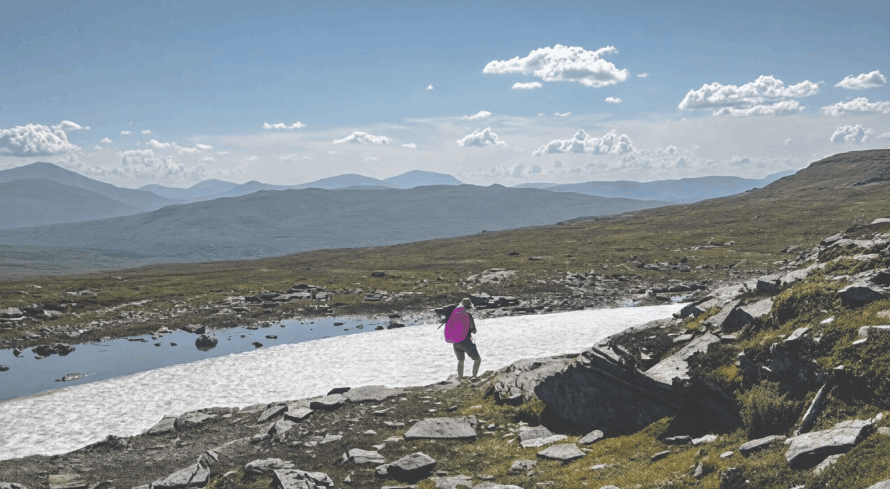

Beskrivning av uppgiften
Uppgiften gick ut på att redigera minst tre olika bilder från zip-filen och dessa tre bilder ska ha olika unika ändringar. Dessa ändringar är att ändra färg på ett objekt, ta bort något från en bild och sedan se till att alla tre bilder förljer samma grafiska profil.
Detta har jag genomfört med hjälp av redigeringsprogrammet Photopea. Photopea är ett gratis redigeringsprogram som är tillgängligt för alla att ladda ner, i programmet kan man redigera och ändra färger, former, kontrast och ljus samt mycket mer.